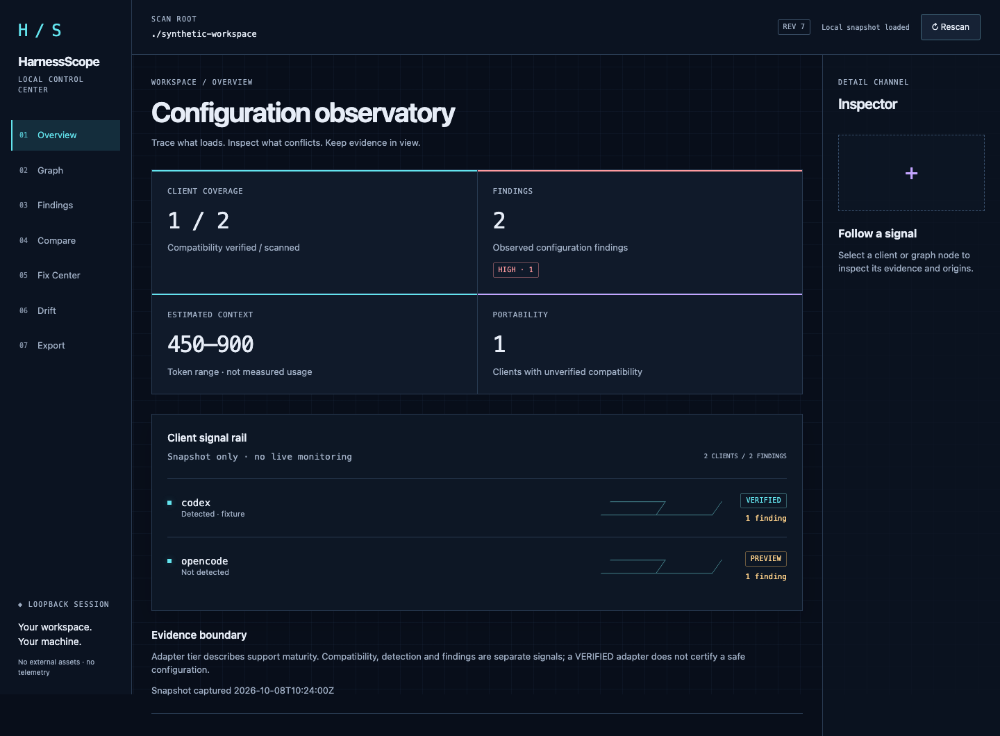

Configuration forensics · local by design
Every rule leaves a trail.
Discover configuration. Trace its origins. Resolve conflicts on your local machine.
The public walkthrough is synthetic. The real inspection stays local.
Source → inheritance → evidence

An evidence trail, from source to decision
Map the local landscape
Discover
See which configuration and instruction files exist across your coding agents. Start with the sources you can inspect.
Ask where a rule came from
Trace
Follow provenance through the graph and inspector. Connect rules, MCP servers, hooks and skills to their declared sources.
Inspect before you apply
Resolve
Review structural findings and safe-fix previews. Applying a safe plan requires explicit confirmation; backups and rollback stay local.
Provenance over guesswork
Follow the source.
Configuration can span clients, files and inherited instructions. HarnessScope makes the declared relationships visible, so you can inspect the evidence behind a finding.
Structural checks are evidence-bounded. They do not guarantee client runtime behavior or interpret instruction semantics.
Walk through fictional evidence ↗Compatibility is a claim with a boundary
Know the evidence tier.
| Client | Tier | Evidence boundary |
|---|---|---|
| Codex | VERIFIED | 0.162.0-alpha.2Exact ruleset verified; other versions are compatibility unknown. |
| Claude Code | VERIFIED | 2.1.259Exact ruleset verified; other versions are compatibility unknown. |
| Cursor | PREVIEW | Documented local rule and MCP sources. Effective precedence is not confirmed. |
| OpenCode | PREVIEW | Documented local JSON/JSONC and instruction sources. Remote configuration is not fetched; effective merge precedence is not asserted. |
Local is a design choice
Your machine.
Your evidence.
Scans run locally. Reports contain no external assets or network requests. HarnessScope does not execute MCP servers or contact remote configuration endpoints.
Credential patterns are redacted after parsing. No secret detector is perfect: review every report before publishing it.
Read the operating boundaries ↗Open the observatory on your machine
Build from source.
Start with the repository and the documented local workflow.